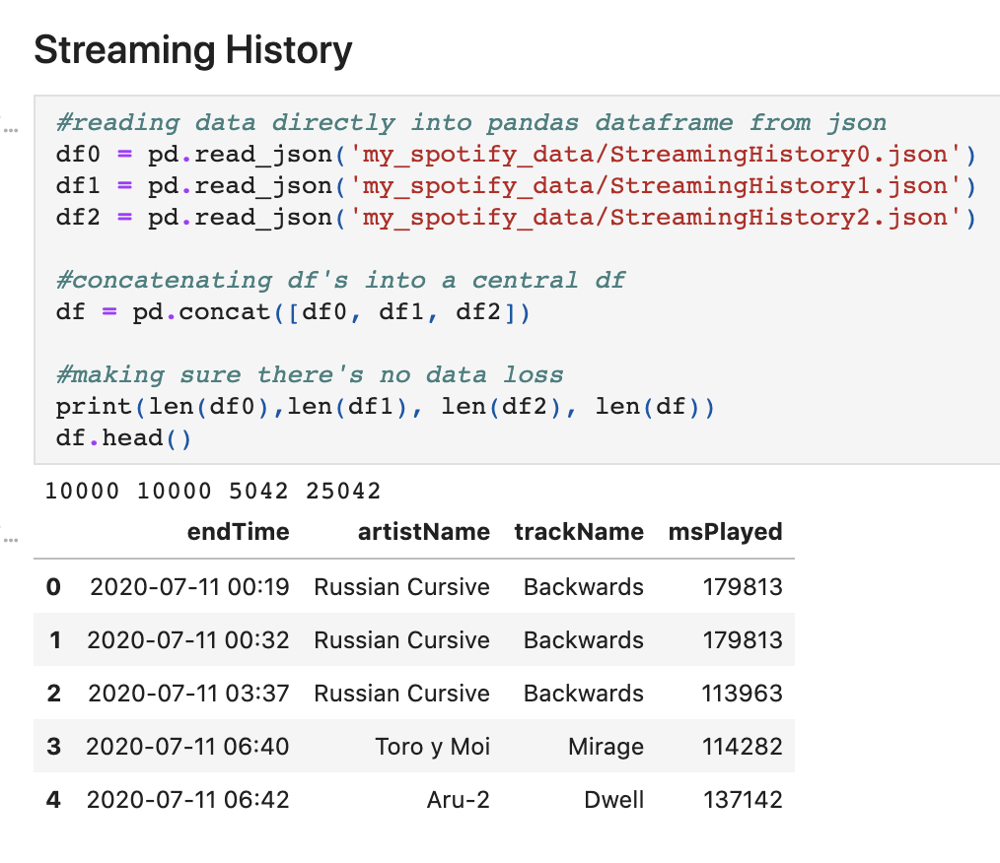

Spotify Data Analysis
Table of Contents
1. Overview
Music has always been a fascinating example of behavior. We change what we listen to
based on our mood. Feeling sad? Maybe mirror that with some Norah Jones. Trying to party?
Throw on some 50cent. Want to finish up a project that's due tomorrow and it's already 11pm the night before
(huh, wonder what that feels like...)? Maybe you need some intense edm to keep you focused
with the four shots of espresso you're about to consume.
I wanted to take my own listening data and explore what it said about me. In the following page,
you'll see what I was and wasn't able to re-confirm about my listening habits. All the code is posted on
github, so you're welcome to explore a bit about yourself too.
2. Data & Tools
I used 2 main data types:
Personal listening data
This data was downloaded directly from spotify in my settings under privacy.
Of this data, I used a 1 year record of listening history (Song, Track, Artist, Listening End Time), and my playlist data (Song, Track, Artist, & Uri for each song in a Playlist ).
Both of these files came in json formats.

Spotify web API
Spotify web API data provided feature data on songs. These features can be seen below:
To collect this data, I had to work with the web API. You can find
a link to the documentation here.
To collect all the data, I created an application in the developer site for Spotify,
then created a python script to return song features for all song uri's
3. Data Preprocessing
Reading in the Data
Files were in json formats. Streaming history was a simple transition to a dataframe. Gathering the required data from the playlist data required a more extensive script, as seen below:
Time Zone Change
During some early data anlaysis, I realized the endTimes were in UTC, and weren't localized to my time zone. I had to change this to be able to plot listening patterns throughout time. This was difficult because I had been in multiple time zones. I fixed this using the code below. I will go into this further in the challenges section.
Data Unification
This proved to be the biggest setback of the project. To gather feature data, you need the song uri. The listening data only provides the album song and artist, not the uri. The playlist data includes the uri. This means I could only get features for songs in my playlists. Once I gathered the features and merged the features with the listening data, the dataset size decreased to 33% of what it initially was, which lead to imperfect data analysis. I will go into this further in the challenges section.
4. Findings
Time of Day Analysis

I listen the least in the morning and late night, or approximately between 2-9am
I listen the most 3-7pm
There is no real difference in listening patterns by day of the week, against my hypothesis that listening would be decreased on weekends because of increased social activity
Favorites

Kokoroko was my most played artist, approximately 150% longer listening time than the next longest song. This makes sense as it’s the song I use for white noise while studying
Favorite artist follows a similar pattern as above
Because of the dataloss during merging, this data doesn't show my true favorites, only
my favorites of the songs in my playlists
Feature Analysis over Time

No significant change in average features across the year period. This indicates that my preferences in song styles are approximately the same
Future direction: Explore how combinations of features change over time & how features vary from playlist to playlist
Network Analysis of Playlists
I created networks where songs or artists were connected if they
shared the same playlist. The edges were weighted such that the larger
the playlist, the weaker the edge to avoid centrality biases towards
songs in large networks. In the visualizations below, songs or artists are
represented by black dots, and the lines between are the playlists that two artists
or songs share. Each color corresponds to a playlist.
Future analysis should investigate centrality of songs and artists and
attempt to cluster artists and see if clusters are logical. Additionally, it would be interesting
to train a model to try to predict playlists based on song features.
5. Challenges
Time Zones
As noted, the initial time zones were all set to UTC. When I did the initial time analysis, I saw that my least listened to hour was around noon. This seemed off since
I know this is typically a time I enjoy listening to music. The pattern seemed to be shifted so I made the inference
that the data was not specifc to a time. After some research, I found that the time zone it was likel reported in
is UTC. This meant that I needed to convert the time zones, with the added complexity of juggling
multiple different time zone changes throughout the data period.
To convert the times, I initially tried breaking the year, month, day, hour, minute, and seconds into individual integers
and subtracting 8 or 5 hours to the hour vector depending on which state I had been in on that given date. I then ran into the issue of
negative hours. For example, 5 am - 8 hours doesn't just become -3am, it becomes 9pm the night before, which means the date
also needed to change. And, on new years, it means that the year can change too.
To combat this, I decided to look into datetime. I found a package called pytz that allows for
time zone changes of datetime items. I then just created a function that normalized the time zone to UTC,
and then that changed the time zone to either EST or PST according to where I was at that given date.
Incomplete Data
I couldn't get all the uri's for each song I had listened to, only songs in my playlist. I found out later I could get the uri's for all songs in my library, but this was too late in the process and I was constricted by time. Not having all song uri's meant not being able to source all the feature data for each song. The dataset dropped from 25042 rows to 9114 rows, a 63% loss of data. I was able to still do a partial analysis, but it was not as accurate due to the lack of data.
6. Conclusion
What I Learned
I strengthened my confidence with Python
I strengthened my comfort with data visualization in python
I strengthened comfort accessing API’s
I refreshed my knowledge on Network analytics and properties
I learned Tableau
I made my first dashboard